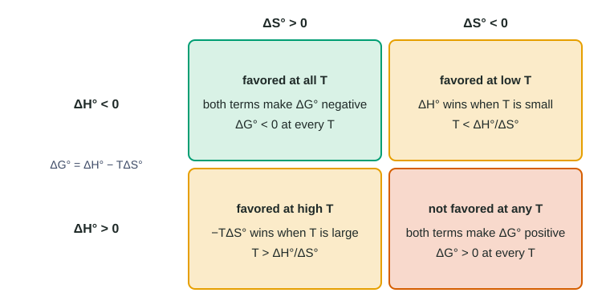

Gibbs Free Energy and Thermodynamic Favorability
Gibbs free energy, ΔG° = ΔH° − TΔS°, decides thermodynamic favorability: a process is favored when ΔG° < 0.
Part 1 · Hook
Why this matters
Part 2 · Before you start
What this builds on
Part 3 · Prerequisite check
Quick check before you start
1. What is the sign of ΔH for an exothermic reaction?
- Negative
- Positive
- Zero
- It depends on the temperature
Show the answer
Exothermic means the system releases heat to the surroundings, so ΔH < 0.
- Correct: Negative:
- Positive:
- Zero:
- It depends on the temperature:
2. What is the unit of a standard entropy change, ΔS°?
- J/(mol·K)
- kJ/mol
- K/mol
- J/mol
Show the answer
Entropies are tabulated in joules per mole per kelvin.
- Correct: J/(mol·K):
- kJ/mol:
- K/mol:
- J/mol:
3. Convert 25 °C to kelvin.
- 298 K
- 248 K
- 25 K
- −248 K
Show the answer
K = °C + 273.15, so 25 °C is 298 K.
- Correct: 298 K:
- 248 K:
- 25 K:
- −248 K:
Part 4 · See it
See it first

Part 5 · Step by step
How it works, step by step
- Releasing heat (ΔH < 0) spreads energy into the surroundings and raises their entropya negative ΔH° makes a process more likely to be favored
- Dispersing the system’s own matter or energy (ΔS > 0) raises the system’s entropya positive ΔS° also makes a process more likely to be favored
- Gibbs free energy weighs both, ΔG° = ΔH° − TΔS°a process is thermodynamically favored when ΔG° < 0
- The entropy term is multiplied by Ttemperature decides which term wins when the two disagree, and T = ΔH°/ΔS° is where they balance
Part 6 · Key ideas
Key ideas
- ΔG° = ΔH° − TΔS°. A process is thermodynamically favored when ΔG° < 0.
- Make units match: ΔS° from J/(mol·K) to kJ/(mol·K) (÷ 1000), and T in kelvin.
- ΔH° < 0, ΔS° > 0: favored at all T. ΔH° > 0, ΔS° < 0: not favored at any T. Same signs: temperature decides.
- When the signs agree, the crossover is T = ΔH°/ΔS°, where ΔG° = 0.
- ΔG°rxn = Σ nΔG°f(products) − Σ nΔG°f(reactants); ΔG°f of an element in its standard state is 0.
Part 7 · Misconception
A common mistake
The wrong idea: An endothermic process is never favored, or an exothermic one always is.
What actually happens: Favorability depends on ΔG° = ΔH° − TΔS°. An endothermic process is favored when TΔS° > ΔH° (ice melting above 0 °C); an exothermic one with ΔS° < 0 stops being favored at high temperature.
Part 8 · Check yourself
Check yourself
Exam-style questions. Anything you miss goes into your review queue.
Data table
Four processes
A student collects standard enthalpy and entropy changes for four processes. Assume ΔH° and ΔS° do not change with temperature.
| Process | ΔH° (kJ/mol) | ΔS° (J/(mol·K)) |
|---|---|---|
| P | −85.0 | +42.0 |
| Q | −118.6 | −154.0 |
| R | +58.4 | +152 |
| S | +40.0 | −25.0 |
1. Which process is thermodynamically favored at every temperature?
- Q
- P
- R
- S
Show the answer
With ΔH° < 0 and ΔS° > 0, ΔG° = ΔH° − TΔS° is negative whatever the temperature.
- Q: ΔS° < 0, so −TΔS° is positive and grows with T. Q is favored only at low temperature.
- Correct: P: Right: ΔH° < 0 and ΔS° > 0, so both ΔH° and −TΔS° are negative and ΔG° < 0 at every temperature.
- R: ΔH° > 0, so R is favored only when T is high enough for −TΔS° to outweigh ΔH°.
- S: ΔH° > 0 and ΔS° < 0 make ΔG° positive at every temperature: S is not favored at any temperature.
2. Which processes are thermodynamically favored at 298 K? Select ALL that apply.
- P
- Q
- R
- S
Show the answer
Convert ΔS° to kJ/(mol·K) and compute ΔG° = ΔH° − TΔS° at 298 K for each process; only P and Q give negative values.
- Correct: P: ΔG° = −85.0 − 298(0.0420) = −97.5 kJ/mol < 0.
- Correct: Q: ΔG° = −118.6 − 298(−0.1540) = −72.7 kJ/mol < 0.
- R: ΔG° = 58.4 − 298(0.152) = 13.1 kJ/mol > 0: 298 K is below the temperature where R becomes favored.
- S: ΔG° = 40.0 − 298(−0.0250) = 47.5 kJ/mol > 0.
3. Above what temperature does process R become thermodynamically favored?
Type a number and its unit.
Show the answer
R becomes favored where ΔG° = 0: T = ΔH°/ΔS° = (58,400 J/mol)/(152 J/(mol·K)) = 384.2 K, which is 384 K to three significant figures. Above this, −TΔS° outweighs ΔH°.
- Answer: 384 K
4. Calculate ΔG° for process R at 500. K.
Type a number and its unit.
Show the answer
ΔG° = ΔH° − TΔS° = 58.4 kJ/mol − (500. K)(0.152 kJ/(mol·K)) = 58.4 − 76.0 = −17.6 kJ/mol. Negative, so R is favored at 500. K, as expected above 384 K.
- Answer: -17.6 kJ/mol
5. For CaCO₃(s) → CaO(s) + CO₂(g), ΔH° = +178.3 kJ/mol and ΔS° = +160.2 J/(mol·K). Calculate the lowest temperature at which the reaction is thermodynamically favored.
Type a number and its unit.
Show the answer
Set ΔG° = 0: T = ΔH°/ΔS° = (178,300 J/mol)/(160.2 J/(mol·K)) = 1113 K. Above this temperature, ΔG° < 0. (At 298 K, ΔG° = 130.6 kJ/mol, strongly unfavored, which is why limestone does not fall apart on its own.)
- Answer: 1113 K
6. For ice melting, ΔH° = +6.01 kJ/mol and ΔS° = +22.0 J/(mol·K). Which statement about a block of ice at −10 °C (263 K) is supported by these data?
- It melts: ΔS° is positive, and any process with a positive ΔS° is favored.
- It melts: ΔG° = 6.01 − (−10)(0.0220) = +6.23 kJ/mol, which is close to zero.
- It does not melt: ΔG° = 6.01 − 263(0.0220) = +0.22 kJ/mol, so melting is not favored.
- It does not melt: melting absorbs heat, and heat-absorbing processes are not favored.
Show the answer
At 263 K the entropy term is too small to overcome ΔH°, so melting is not favored. Above 273 K it is.
- It melts: ΔS° is positive, and any process with a positive ΔS° is favored.: A positive ΔS° helps but must outweigh ΔH°. At 263 K it does not.
- It melts: ΔG° = 6.01 − (−10)(0.0220) = +6.23 kJ/mol, which is close to zero.: Temperature must be in kelvin, and a positive ΔG° is not favored anyway.
- Correct: It does not melt: ΔG° = 6.01 − 263(0.0220) = +0.22 kJ/mol, so melting is not favored.: Right: at 263 K, TΔS° (5.79 kJ/mol) is smaller than ΔH°, so ΔG° > 0.
- It does not melt: melting absorbs heat, and heat-absorbing processes are not favored.: The conclusion is right for the wrong reason. Ice does melt above 273 K even though melting absorbs heat, because TΔS° then outweighs ΔH°.
7. A reaction has ΔH° = −50.0 kJ/mol and ΔS° = −100. J/(mol·K). A student calculates ΔG° at 300. K as −50.0 − (300.)(−100.) = +29,950 kJ/mol. What went wrong?
- The temperature should be in °C, so T = 27 and ΔG° = −47.3 kJ/mol instead.
- ΔS° was not converted to kJ/(mol·K); with −0.100 kJ/(mol·K), ΔG° = −20.0 kJ/mol.
- The sign of ΔS° should have been ignored, giving ΔG° = −80.0 kJ/mol.
- ΔH° should have been multiplied by T, giving ΔG° = −15,000 kJ/mol.
Show the answer
ΔH° is in kJ/mol and ΔS° in J/(mol·K). Convert one so the units match: ΔG° = −50.0 − (300.)(−0.100) = −20.0 kJ/mol.
- The temperature should be in °C, so T = 27 and ΔG° = −47.3 kJ/mol instead.: Thermodynamic equations need kelvin, so 300. K was right.
- Correct: ΔS° was not converted to kJ/(mol·K); with −0.100 kJ/(mol·K), ΔG° = −20.0 kJ/mol.: Right: −50.0 − (300.)(−0.100) = −50.0 + 30.0 = −20.0 kJ/mol.
- The sign of ΔS° should have been ignored, giving ΔG° = −80.0 kJ/mol.: The sign of ΔS° matters; with ΔS° < 0, −TΔS° is positive.
- ΔH° should have been multiplied by T, giving ΔG° = −15,000 kJ/mol.: In ΔG° = ΔH° − TΔS°, only ΔS° is multiplied by T.
Part 9 · Summary
Summary
Part 10 · Up next
What comes next
Part 11 · Connections